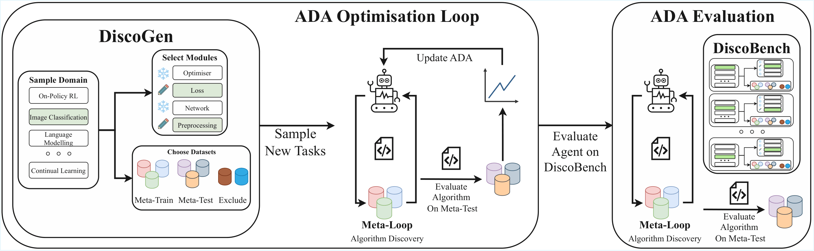
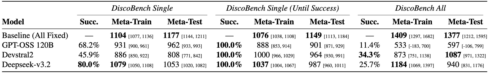
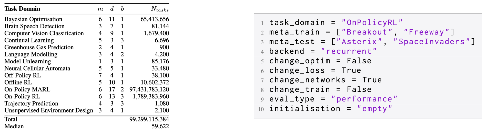
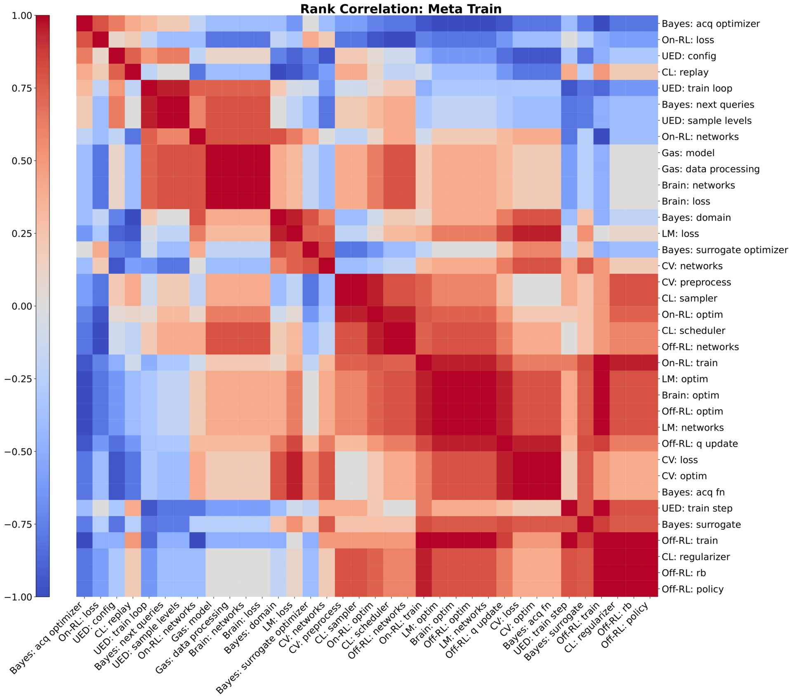
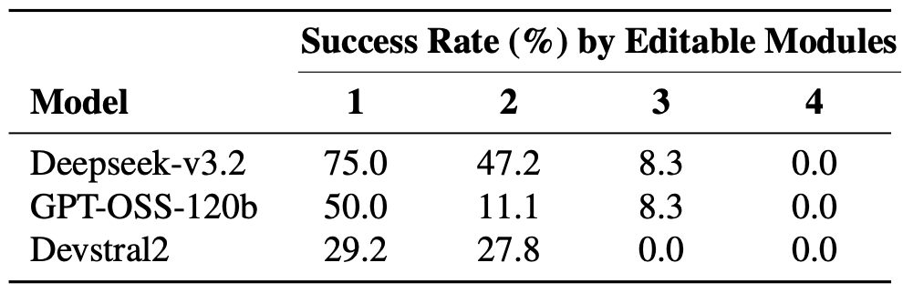
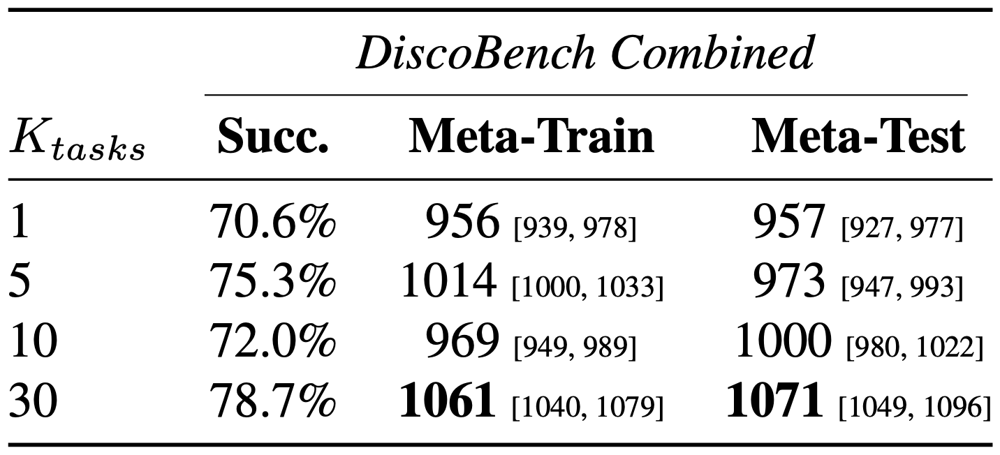

DiscoGen: Procedural Generation of Algorithm Discovery Tasks in Machine Learning
- Alexander D. Goldie *
- Zilin Wang †
- Adrian Hayler †
- Deepak Nathani †
- Edan Toledo †
- Ken Thampiratwong †
- Aleksandra Kalisz †
- Michael Beukman ‡
- Alistair Letcher ‡
- Shashank Reddy ‡
- Clarisse Wibault ‡
- Theo Wolf ‡
- Charles O'Neill ‡
- Uljad Berdica ‡
- Nicholas Roberts ‡
- Saeed Rahmani ‡
- Hannah Erlebach ‡
- Roberta Raileanu §
- Shimon Whiteson §
- Jakob N. Foerster §


Abstract
Automating the development of machine learning algorithms has the potential to unlock new breakthroughs. However, our ability to improve and evaluate algorithm discovery systems has thus far been limited by existing task suites. They suffer from many issues, such as: poor evaluation methodologies; data contamination; and containing saturated or very similar problems. Here, we introduce DiscoGen, a procedural generator of algorithm discovery tasks for machine learning, such as developing optimisers for reinforcement learning or loss functions for image classification. Motivated by the success of procedural generation in reinforcement learning, DiscoGen spans millions of tasks of varying difficulty and complexity from a range of machine learning fields. These tasks are specified by a small number of configuration parameters and can be used to optimise algorithm discovery agents (ADAs). We present DiscoBench, a benchmark consisting of a fixed, small subset of DiscoGen tasks for principled evaluation of ADAs. Finally, we propose a number of ambitious, impactful research directions enabled by DiscoGen, in addition to experiments demonstrating its use for prompt optimisation of an ADA.
Overview

We introduce DiscoGen, a procedural generator of algorithm discovery tasks for automated machine learning research. Unlike benchmarks for automated algorithm discovery, which are static sets of tasks designed for evaluating agents, DiscoGen can generate billions of unique algorithm discovery tasks for optimising agents.
DiscoGen is used in an ADA Optimisation Loop. When an ADA discovers machine learning algorithms in a meta-loop, the ADA Optimisation Loop effectively becomes meta-meta-learning. At each ADA optimisation step, DiscoGen can be queried for fresh algorithm discovery tasks, each specifying the ML domain, the algorithm components to be discovered, the algorithm evaluation objective, and the datasets available for experimentation.
To enable better and more principled evaluation of ADAs, we also introduce DiscoBench, a benchmark of tasks within the support of the DiscoGen generator. All evaluation experiments in our paper use DiscoBench. A key finding: current models consistently struggle to outperform standard baseline implementations across domains.
Throughout this page we highlight the core ideas behind DiscoGen. For a more complete understanding, please refer to:
- Our paper, which includes significantly more detail about DiscoGen, additional experiments, and a number of interesting research ideas enabled by DiscoGen.
- The DiscoGen library, to explore how DiscoGen is implemented and what domains are currently supported.
- Our comprehensive documentation, which describes getting started, contributing to DiscoGen, and how to integrate DiscoGen into an ADA optimisation system.
You can install the package with pip install discogen to try out the DiscoGen CLI or API.
What is DiscoGen?

DiscoGen is not a benchmark; whereas existing suites of algorithm discovery tasks are static and manually designed, DiscoGen is a procedural generator which is able to generate billions of unique algorithm discovery tasks. DiscoGen currently supports 14 different domains.
Tasks in DiscoGen are modular. Rather than asking an ADA to solve an entire problem end-to-end, we ask it to discover one or more specific components of an algorithm, such as the loss function or optimiser.
Like in many procedurally generated settings, each DiscoGen task is defined by a small number of parameters:
- Task Domain: What field of machine learning the task pertains to. Examples currently implemented include On-Policy Reinforcement Learning or Image Classification.
- Editable Modules: Which components of the algorithm the ADA should discover. At least one must be true, so the agent has something to discover!
- Meta-Train Datasets: A list of datasets which an ADA is allowed to experiment with. These are the datasets which a discovered algorithm is refined on. This will also establish the initial codebase.
- Meta-Test Datasets: A list of datasets, which are completely held out from the ADA, which a discovered algorithm is evaluated on.
- Evaluation Type: The objective for the agent. We support three different types of evaluation: maximising the performance of the algorithm; minimising the energy used by the algorithm while hitting a performance threshold; or minimising the time taken by the algorithm while hitting a performance threshold.
- Initialisation: What the agent is given to start with; either a standard baseline implementation for each editable module, or an empty file which simply defines the inputs and outputs for the agent. If editable modules call each other, the agent can change this!
- [Optional] Backend: For some task domains, we support different backends, which provide minor changes to the initial codebase.
The Advantages of DiscoGen


The principled task design and procedural generation of DiscoGen opens up a lot of benefits over existing task suites for algorithm discovery.
- Enough Tasks for Learning: Existing task suites are typically very small (on the order of tens of tasks). Instead, DiscoGen supports billions of tasks, providing a practically unlimited source of unique algorithm discovery problems to learn from. Such scale should unlock the ability to train generalist research agents.
- Meta-Train/Meta-Test Split: A principled separation between algorithm discovery (meta-train) and algorithm evaluation (meta-test) means we are assessing algorithms on their ability to generalise. Overfitting to a dataset is still overfitting! The graphic above illustrates this: we cluster a rank correlation heatmap across a range of DiscoBench tasks based on meta-train performance, and observe how the structure breaks down at meta-test; algorithms that performed well during discovery do not necessarily generalise.
- Range of Difficulties: By parameterising tasks for generation, as above, it is easy to control their difficulty. Tasks can be made harder or easier by using different datasets, expanding the number of meta-train datasets, making more modules editable, or changing how files are initialisation. We find that adding more modules lowers the success rate but raises the maximum achieved score over independent runs; the table above show this across all module combinations for the On-Policy RL domain.
Learning to Discover Learning Algorithms

A central goal of DiscoGen is to enable meta-meta-learning: optimising agents to become better at discovering machine learning algorithms. We explore how automated prompt optimisation can improve the capabilities of algorithm discovery agents.
Our meta-meta-loop uses an LLM to propose new prompts for the discovery agent, based on prior performance. Each prompt is optimised over 30 steps. We sweep the number of randomly sampled DiscoGen tasks used during optimisation from 1 (the same task for all 30 steps) to 30 (a new task at every step).
The results lead to two key findings. Firstly, using fewer tasks leads to overfitting: prompts discovered on small numbers of tasks were closely tied to the seen tasks rather than capturing general discovery strategies. Secondly, meta-test performance improves monotonically with the number of distinct tasks experienced. Clearly, the more tasks that are seen in meta-meta-training, the better the discovered algorithms in held-out tasks.
Next Steps
There is a lot of new research we can explore with DiscoGen. In the paper we provide a large set of suggested research directions; we have been thinking about algorithm world models, curriculum learning and better tree search for algorithm discovery agents, for a few. Be sure to check out the paper for more details and ideas!
DiscoGen also thrives on open-source contributions. Please check out our contributing documentation to learn about adding new domains, modules or datasets to DiscoGen.
Citation
The website template was borrowed from Easy Academic Website Template and Jon Barron.